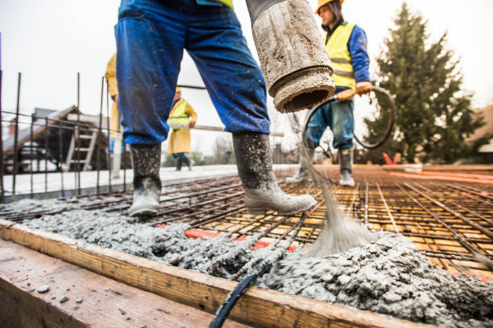

Marion Pennsylvania
info@hudsonconcretecontractors.xyz
Marion Pennsylvania
info@hudsonconcretecontractors.xyz

Top-rated concrete services in Marion Pennsylvania . We provide expert installation and repair for driveways, sidewalks, and patios. Reliable, durable, and cost-effective solutions tailored to your needs.
Click Here To Call Us (877) 848-1711Looking for top-notch concrete services in Marion Pennsylvania ? Our concrete company stands as a leader in the industry, offering a full range of services designed to meet your residential and commercial needs. Whether you’re planning a new driveway, a custom patio, or need professional foundation work, we have the expertise and equipment to get the job done right.
We specialize in concrete installations, repairs, and maintenance, ensuring your project is built to last. Our team uses only the highest quality materials and the latest techniques to deliver durable, attractive, and cost-effective solutions. With years of experience serving the Marion Pennsylvania community, we pride ourselves on providing exceptional customer service and unmatched craftsmanship.
From decorative concrete to large-scale commercial projects, we handle it all with precision and care. Our licensed and insured professionals are committed to delivering results that exceed your expectations. We also offer free consultations to help you plan your project from start to finish.
Choose the best concrete company in Marion Pennsylvania for your next project. Contact us today to get started and see why we're the preferred choice for concrete services in Marion Pennsylvania .
Residential & commercial Concrete
Quality services at affordable prices
Immediate 24/ 7 emergency services


Concrete is renowned for its durability and strength, but even the toughest surfaces can develop cracks over time. At Hudson Concrete Contractors, serving Marion Pennsylvania we understand the frustration that cracks can cause and are here to shed light on the common reasons behind these issues.
Shrinkage During Curing
One of the primary causes of cracks in concrete is shrinkage during the curing process. As concrete dries, it contracts. If the curing process is not managed properly, or if the concrete mix has high water content, this shrinkage can lead to surface cracks. Ensuring adequate curing techniques and proper mix proportions can help minimize these issues.
Temperature Fluctuations
Concrete is sensitive to temperature changes. Rapid fluctuations between hot and cold can cause expansion and contraction, leading to cracks. Extreme temperatures during setting or curing can exacerbate these problems. Implementing temperature control measures and using suitable concrete formulations can mitigate the effects of temperature changes.
Poor Concrete Mix and Compaction
The quality of the concrete mix plays a crucial role in its durability. An improperly mixed concrete or insufficiently compacted mixture can lead to weak spots that are prone to cracking. Using high-quality materials and ensuring proper mixing and compaction are essential for a long-lasting concrete surface.
Settlement and Soil Movement
Concrete slabs can crack due to underlying soil movement or settlement. If the ground beneath the concrete shifts or settles unevenly, it can cause the concrete to crack. Proper site preparation, including soil stabilization and adequate sub-base, helps prevent such issues.
Overloading
Excessive weight or stress placed on concrete surfaces can lead to cracks. Overloading beyond the designed capacity of the concrete can cause structural damage. Adhering to load limits and using reinforced concrete where necessary can prevent this problem.
For expert solutions to prevent and repair concrete cracks in Marion Pennsylvania trust Hudson Concrete Contractors. Contact us today to ensure your concrete surfaces remain strong and crack-free!
Residential & commercial Concrete
Quality services at affordable prices
Immediate 24/ 7 emergency services
If you’re searching for trustworthy cement contractors near you, look no further than Concrete. We have built a strong reputation for providing top-quality cement services, tailored to meet your specific needs. Our team of experienced contractors has the expertise and tools to handle projects of any size effectively. We prioritize durability, efficiency, and excellent customer service at every step. With us, you can expect a seamless process from start to finish, ensuring your satisfaction with our cement solutions.

Budget constraints shouldn’t prevent you from getting quality concrete services. Our affordable concrete services in Marion Pennsylvania provide you with high-quality solutions without breaking the bank. We offer a range of services tailored to fit your budget, whether you need a new driveway, patio, or concrete resurfacing. By choosing us, you ensure that you're getting the best value for your investment, with no compromise on quality or service.

Protecting your concrete surfaces is essential to extending their lifespan. Our concrete sealing services provide a protective barrier against moisture, stains, and damage. Our experienced technicians use high-quality sealants that enhance the durability and appearance of your concrete. Whether it’s for residential or commercial properties, we customize our sealing services to meet your specific needs. At Concrete, we understand the importance of maintaining your concrete, and we are here to offer expert advice and solutions for all your sealing needs.

Uneven concrete surfaces can pose safety hazards and detract from the appearance of your property. Our concrete leveling services in Marion Pennsylvania can help restore stability and efficiency to your surfaces. We utilize advanced techniques, including mudjacking and polyjacking, to lift and level your concrete quickly and effectively. Our skilled team thoroughly assesses the situation and executes the best solution to ensure your concrete is even and safe. Trust us for your concrete leveling needs and bring back the functionality of your spaces.
A solid foundation is the basis of any structure. Our concrete foundation installation services are designed to create a stable base for your home or business. We prioritize safety and quality, ensuring that every foundation we build will support your property for years to come. Our skilled team works closely with you to understand your project requirements and provides turnkey solutions tailored to your needs. Choose Concrete for reliable and sturdy foundation installations that stand the test of time.
Concrete staining is an excellent way to add color and style to your surfaces without compromising their strength. Our concrete staining services offer an array of color options and finishes, allowing you to customize your driveways, patios, and floors to match your aesthetic preferences. The staining process enhances the natural beauty of concrete while providing protection against wear and fading. Our experienced team utilizes top-quality stains and techniques to achieve stunning results that elevate the overall appearance of your property. Choose us to give your concrete surfaces a beautiful, lasting finish.

With so many concrete construction companies available, selecting the right partner for your project can be daunting. Our company sets itself apart through our commitment to quality, customer service, and reliability. From residential projects to large commercial builds, we have the expertise to handle jobs of any size. Our experienced team utilizes the latest technology and practices to deliver outstanding results aligned with your specifications and deadlines.

For construction projects requiring quick, reliable concrete deliveries, our ready mix concrete delivery services are unparalleled. We provide high-quality, pre-mixed concrete that is perfect for any application, ensuring you get the right mix, right when you need it. Our experienced drivers and logistical planning help you avoid delays on-site, so you can keep your project on track. Trust us for efficient deliveries that ensure your project runs smoothly from start to finish.
Years Experience
Expert Technicians
Satisfied Clients
Compleate Projects
Why Choose Painting Vikmanic in Marion Pennsylvania ?
At Painting Vikmanic, we understand that choosing the right painting contractor is crucial to transforming your space. That’s why we are dedicated to providing exceptional painting services across all cities in Marion Pennsylvania . Our team of highly skilled professionals brings a wealth of experience and a passion for excellence to every project, ensuring your vision becomes a reality.
Why choose us? Our commitment to quality craftsmanship and customer satisfaction sets us apart. We use only the highest-quality materials and advanced techniques to deliver stunning, long-lasting results. Whether you’re looking to refresh your home’s interior, enhance your commercial property, or undertake a large-scale renovation, Painting Vikmanic has the expertise and resources to exceed your expectations.
Our services include everything from meticulous surface preparation to the application of beautiful finishes. We handle every aspect of your painting project with precision and care, ensuring a seamless and stress-free experience. Our attention to detail and dedication to excellence mean that we don’t just paint walls—we create enduring works of art.
Customer satisfaction is at the core of what we do. We offer free consultations and detailed estimates to ensure transparency and align with your budget. Our friendly and professional team is always ready to answer your questions and provide guidance, making the process as smooth and enjoyable as possible.
Choose Painting Vikmanic in Marion Pennsylvania for your next painting project and experience the difference that expert craftsmanship and exceptional service can make. Contact us today to get started!
When it comes to finding reliable concrete contractors near you look no further! Our expert team specializes in delivering top-notch concrete solutions tailored to your specific needs. Whether you require residential or commercial concrete services, we have the skills and experience to handle any project, big or small. What sets us apart from others is our unwavering commitment to quality, customer satisfaction, and affordability. By choosing us, you’ll benefit from our extensive knowledge of local permits, codes, and regulations, ensuring a hassle-free experience from start to finish.
Your home deserves nothing less than the best when it comes to concrete work. Our residential concrete services offer a range of options to enhance your property’s curb appeal and functionality. Whether you need a new driveway, patio, or decorative features, our skilled professionals work diligently to bring your vision to life. We take pride in our attention to detail and dedication to quality, ensuring that every project is completed on time and within budget. We use premium materials and advanced techniques to deliver superior results that not only meet but exceed your expectations. Trust us to transform your home with our unmatched residential concrete services.
The foundation of any successful commercial venture lies in solid concrete structures. At Concrete, our commercial concrete contractors in Marion Pennsylvania possess the expertise and experience required to tackle projects of all sizes. From warehouses to retail spaces, our team delivers high-quality concrete solutions designed to meet the specific demands of your business. We prioritize safety, efficiency, and timely project completion, ensuring your commercial space is ready as scheduled. Choose us for your commercial concrete projects, and experience the reliability and professionalism that sets us apart .
A driveway is often the first impression visitors have of your home, which is why our concrete driveway installation services in Marion Pennsylvania are designed with aesthetics and durability in mind. A professionally installed concrete driveway not only enhances curb appeal but also offers a long-lasting solution that withstands the test of time. Our team uses high-quality materials and advanced techniques to provide a flawless finish. Additionally, we ensure timely completion, minimal disruption, and excellent customer service, making us the best choice for your driveway needs.
A well-designed concrete patio can transform your outdoor space into a functional and aesthetically pleasing area for relaxation and entertainment. Our concrete patio installation services are tailored to create the perfect outdoor living space that matches your style and needs. From simple designs to elaborate features, our skilled contractors work closely with you to bring your ideas to life. We understand the importance of quality, which is why we only use high-quality materials and adhere to best practices for installation. Choose us for an expertly crafted concrete patio that you and your family will enjoy for years to come.
Stamped concrete offers a unique and stylish alternative to traditional concrete surfaces. Our stamped concrete services in Marion Pennsylvania provide the opportunity to achieve the look of high-end materials like stone or brick at a fraction of the cost. Our skilled artisans use advanced techniques to create stunning patterns and designs that will elevate your residential or commercial property. Whether for driveways, patios, or walkways, our stamped concrete not only adds visual appeal but also durability, making it a smart investment. Experience the beauty of stamped concrete today by choosing Concrete.
A strong foundation is crucial for any structure. If you're noticing signs of foundation issues, you need reliable concrete foundation repair services. Our experts in Marion Pennsylvania will evaluate your foundation and recommend the best solutions to restore its stability. We employ the latest techniques and technologies to ensure effective repairs that stand the test of time. At Concrete, we understand the complexities of foundation repair and are dedicated to providing top-notch service and support every step of the way. Invest in your property with our trusted foundation repair solutions.
Concrete slabs serve as the backbone of your structures, providing a durable and solid foundation. Our concrete slab installation services are conducted with precision and care, ensuring every slab we pour meets the highest standards of quality. Whether for residential or commercial projects, our experienced crew utilizes the best practices and equipment to deliver slabs that are perfectly level and structurally sound. Investing in our services means investing in the stability and integrity of your building.
Decorative concrete adds flair and style to traditional concrete surfaces. Our decorative concrete services in Marion Pennsylvania include a wide range of finishes and techniques, such as coloring, staining, and stamping. We work closely with our clients to design surfaces that are not only functional but also enhance the beauty of their spaces. With our attention to detail and commitment to quality, you can trust that your decorative concrete will make a lasting impression.
Over time, concrete surfaces can suffer from wear and tear, leading to unsightly cracks and stains. Our concrete resurfacing services provide an effective solution to rejuvenate and restore your surfaces. Whether it’s your driveway, patio, or flooring, we apply a high-quality resurfacer that covers imperfections and improves the overall appearance. Our team uses advanced techniques to ensure a smooth and durable finish that can withstand the elements. If you want to refresh your concrete surfaces without the cost of complete replacement, choose our trusted resurfacing services.
Damaged concrete can lead to safety hazards and detract from your property’s value. Our concrete repair contractors are skilled in identifying and fixing a wide range of issues, from cracks and spalling to significant structural damage. We take a comprehensive approach to each repair project, ensuring that we address the root cause of the problem, not just the symptoms. Our team uses high-quality materials and proven repair techniques, providing you with long-lasting solutions that restore the integrity and appearance of your concrete surfaces. When it comes to concrete repair, trust us to get the job done right.
Sidewalks are not only functional but also contribute to the overall aesthetic of your property. If you’re experiencing cracks, uneven surfaces, or other issues with your sidewalks, our sidewalk concrete repair services in Marion Pennsylvania are here to help. Our team works quickly and efficiently to restore safety and functionality to your sidewalks, using high-quality materials and techniques for a durable finish. We understand the importance of curb appeal and safety in your community. Choose us for reliable and professional sidewalk repairs that make a difference.
Concrete floors offer unmatched durability and versatility for both residential and commercial venues. Our concrete floor installation services are designed to provide you with a strong, long-lasting surface that can withstand heavy use while looking aesthetically pleasing. We specialize in a variety of finishes and styles, including polished concrete, stained floors, and more, allowing you to customize the look to fit your space. Our skilled team ensures a professional installation process that covers everything from preparation to finishing touches. Trust us for high-quality concrete flooring that enhances your property’s appeal and functionality.
When replacing or updating your concrete surfaces, effective concrete removal is essential. Our concrete removal services are thorough and efficient, ensuring that all unwanted concrete is safely and completely taken away. Our experienced team is equipped with the right tools and techniques to handle any job, big or small, while minimizing disruption to your property. We prioritize safety, proper disposal, and clean-up, leaving you with a fresh canvas for your new project. Rely on us for all your concrete removal needs, and achieve a hassle-free transition to new surfaces.
Navigating through local concrete companies in Marion Pennsylvania can be overwhelming, but we make it easy for you. We pride ourselves on being one of the leading local providers, offering a vast array of services catering to both residential and commercial clients. With a reputation built on integrity, quality, and customer satisfaction, we are dedicated to providing services that stand out. Choosing local means you receive personalized service, quick response times, and community support, all without compromising on quality.
When searching for the best concrete contractors look to us for exceptional quality and service. Our team of skilled professionals is dedicated to delivering impeccable concrete solutions tailored to your specific needs. We offer extensive services from decorative applications to structural foundations, ensuring we have the expertise for any project. With competitive pricing, outstanding customer service, and a commitment to excellence, we strive to maintain our reputation as the best in the business.
Our concrete pouring services are perfect for both new constructions and renovation projects where a solid and durable foundation is necessary. Our skilled team ensures that all pouring is executed with precision, adhering to local regulations and industry best practices. We utilize high-quality concrete mixes and advanced equipment to deliver consistent results. By choosing us, you benefit from our reliability, experience, and dedication to achieving the best possible outcomes for your projects.
The durability and lifespan of concrete are critical considerations for homeowners and businesses in Marion Pennsylvania . At Hudson Concrete Contractors, we understand that several factors influence how long your concrete surfaces will last and remain in good condition.
Quality of Materials
The quality of the materials used in concrete mixing directly impacts its durability. High-quality cement, aggregate, and water ensure a strong and resilient mixture. Using premium materials can prevent common issues such as cracking, scaling, and erosion, extending the lifespan of your concrete surfaces.
Proper Mixing and Curing
Correct mixing ratios and adequate curing are essential for optimal concrete performance. Over- or under-mixing can weaken the concrete, while improper curing can lead to surface cracks and reduced strength. Ensuring the right proportions and maintaining appropriate curing conditions are vital for enhancing concrete durability.
Environmental Conditions
Environmental factors play a significant role in the lifespan of concrete. Extreme temperatures, high humidity, and exposure to chemicals can accelerate wear and tear. Using sealers and protective coatings can help shield concrete from harsh environmental conditions and prolong its service life.
Load and Stress
Concrete must be designed to handle the specific loads and stresses it will encounter. Overloading or structural stress can cause premature deterioration. Properly calculating and reinforcing concrete to meet the demands of its use will ensure long-term durability.
Site Preparation and Installation
The quality of site preparation and installation is crucial. Proper grading, drainage, and soil compaction help prevent settling and cracking. Ensuring a solid foundation and correct installation practices are key to a durable concrete surface.
Maintenance Practices
Regular maintenance, such as cleaning and sealing, plays a crucial role in extending the lifespan of concrete. Routine inspections and prompt repairs of any minor issues can prevent more significant problems and preserve the integrity of your surfaces.
For expert guidance and durable concrete solutions in Marion Pennsylvania trust Hudson Concrete Contractors. Contact us today to learn more about maintaining and enhancing the longevity of your concrete surfaces.
Marion is an unincorporated community and census-designated place (CDP) in Franklin County, Pennsylvania, United States. As of the 2020 census, the population was 851.
The cost of concrete work depends on the project's size and complexity. Hudson Concrete Contractors offers competitive pricing and free estimates in Marion Pennsylvania .
Concrete typically takes around 28 days to fully cure, but it can be walked on within 24-48 hours. Hudson Concrete Contractors advises waiting longer for heavy loads.
Yes, we provide concrete sidewalk installation and repair services for residential and commercial properties .
Concrete is an excellent option for patios due to its durability, low maintenance, and customization options for color and texture.
Concrete is low-maintenance but sealing every few years and occasional cleaning can help prolong its life. Hudson Concrete Contractors provides maintenance tips .
Yes, we offer a variety of colored concrete options to enhance the appearance of your patios, driveways, or walkways .
Yes, we offer durable concrete retaining wall construction for both residential and commercial properties.
Yes, Hudson Concrete Contractors provides residential concrete services such as driveway, patio, and walkway installations .
Yes, we use special techniques and additives to pour concrete in cold weather conditions ensuring proper curing.
Yes, Hudson Concrete Contractors provides expert concrete foundation installation for homes and commercial buildings in Marion Pennsylvania .
Yes, Hudson Concrete Contractors is fully licensed and insured to provide professional and safe concrete services in Marion Pennsylvania .
A properly installed concrete driveway by Hudson Concrete Contractors can last up to 30 years with proper maintenance .
Hudson Concrete Contractors provides a range of services including driveways, patios, foundations, sidewalks, and decorative concrete installations.
Cement is a key ingredient in concrete. Concrete is a mixture of cement, sand, gravel, and water. Hudson Concrete Contractors uses high-quality concrete for all projects in Marion Pennsylvania .
Proper site preparation, including grading and leveling, is crucial. Hudson Concrete Contractors handles all prep work to ensure a smooth, durable installation in Marion Pennsylvania .
The time frame depends on the project size, but most concrete projects by Hudson Concrete Contractors are completed within 3-7 days in Marion Pennsylvania .
Hudson Concrete Contractors recommends high-strength, durable concrete mixes designed for heavy traffic and weather resistance for driveways in Marion Pennsylvania .
Yes, we offer custom concrete design services, including decorative, stamped, and colored options to match your vision .
Yes, Hudson Concrete Contractors offers free, no-obligation estimates for all concrete projects in Marion Pennsylvania .
Yes, we specialize in stamped concrete services in Marion Pennsylvania offering decorative options to mimic stone, brick, or tile.
Yes, we provide professional concrete repair services to fix cracks, spalling, and other damage.
Concrete is a sustainable material, especially when recycled. Hudson Concrete Contractors follows environmentally friendly practices .
Yes, we offer concrete resurfacing services in Marion Pennsylvania to restore old, worn-out surfaces and make them look brand new.
Yes, we provide concrete leveling and repair services to fix uneven or sunken surfaces.
Absolutely. Hudson Concrete Contractors has extensive experience managing large-scale commercial concrete projects in Marion Pennsylvania .
Yes, we use steel reinforcement (rebar or mesh) in concrete installations to increase strength and durability .
Yes, we offer concrete demolition and removal services for old or damaged concrete .
Yes, Hudson Concrete Contractors has the expertise and equipment to manage large commercial and residential concrete projects .
We recommend waiting at least 7 days before driving on a new concrete driveway installed by Hudson Concrete Contractors in Marion Pennsylvania .
The best time to pour concrete is during mild weather conditions, typically in spring or fall, but we can work year-round.
Hudson Concrete Contractors provided exceptional service for our concrete foundation in Marion Pennsylvania . Their craftsmanship and attention to detail were outstanding. We’re very satisfied with the results! — Stephanie K.
Profession
The concrete services provided by Hudson Concrete Contractors in Marion Pennsylvania were top-notch. From start to finish, their team was efficient and the quality of their work was impressive. Great job! — Alan S.
Profession
The concrete patio Hudson Concrete Contractors installed in Marion Pennsylvania looks fantastic. Their team was prompt, courteous, and did an excellent job. We’re very happy with the end result! — Laura W.
Profession
Marion PA Concrete Pros
(877) 848-1711
info@hudsonconcretecontractors.xyz
09.00 AM - 09.00 PM
09.00 AM - 12.00 PM